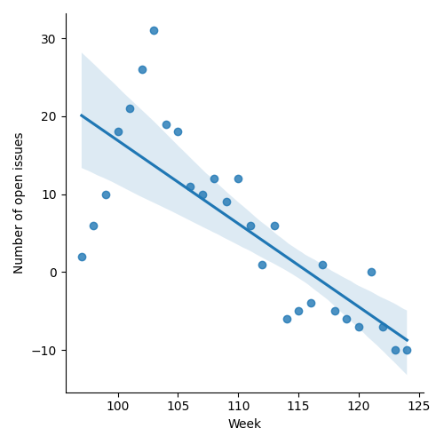
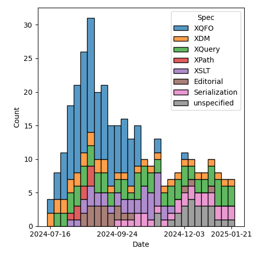
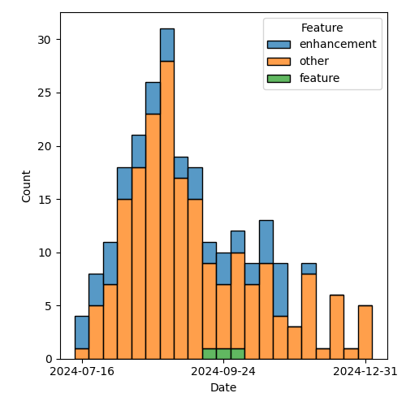

QT4 CG Meeting 107 Minutes 2025-01-28
Meeting index / QT4CG.org / Dashboard / GH Issues / GH Pull Requests
Table of Contents
- Draft Minutes
- Summary of new and continuing actions
[0/11] - 1. Administrivia
- 2. Technical agenda
- 3. Any other business
- 4. Adjourned
Draft Minutes
Summary of new and continuing actions [0/11]
[ ]QT4CG-082-02: DN to work with MK to come to agreement on the fn:ranks proposal[ ]QT4CG-088-04: [Someone] needs to update the processing model diagram needs vis-a-vis the static typing feature[ ]QT4CG-097-02: MK to make the XSD schema component references into links to XSD[ ]QT4CG-103-01: MK to add an example of showing all the properties for an untyped node.[ ]QT4CG-106-01: NW to remove the dead wood from the XSLT build (SVG diagrams)[ ]QT4CG-107-01: MK to amend PR 1722 so the expansion of focus functions includes the return typeitem()*[ ]QT4CG-107-02: MK to propose adding the "duplicates" option (frommap:merge) tomap:buildandmap:of-pairs[ ]QT4CG-107-03: MK to propose amending all the functions that return ordered maps so that when duplicates are found, the key of the combined entry is taken from the first of the duplicates.[ ]QT4CG-107-04: MK to review CG’s comment to alignfn:map-mergeby removing the reference to random number generator and fixing a typo.[ ]QT4CG-107-05: JLO and DN to consider a proposal for system defined records.[ ]QT4CG-107-06: NW to integrate DN’s expandable ToC into the build.
1. Administrivia
1.1. Roll call [10/13]
Regrets: SF.
[X]David J Birnbaum (DB)[ ]Reece Dunn (RD)[ ]Sasha Firsov (SF)[X]Christian Grün (CG)[X]Joel Kalvesmaki (JK) [:05-][X]Michael Kay (MK)[X]Juri Leino (JLO)[X]John Lumley (JWL)[X]Dimitre Novatchev (DN)[X]Wendell Piez (WP)[X]Ed Porter (EP)[ ]Bethan Tovey-Walsh (BTW)[X]Norm Tovey-Walsh (NW). Scribe. Chair.
1.2. Accept the agenda
Proposal: Accept the agenda.
Accepted.
1.2.1. Status so far…
These charts have been adjusted so they reflect the preceding six months of work.

Figure 1: “Burn down” chart on open issues

Figure 2: Open issues by specification

Figure 3: Open issues by type
1.3. Approve minutes of the previous meeting
Proposal: Accept the minutes of the previous meeting.
Accepted.
1.4. Next meeting
This next meeting is planned for 4 February 2025.
MK, JWL (possible) gives regrets. CG gives regrets for 11 and 18 February.
1.5. Review of open action items [2/7]
(Items marked [X] are believed to have been closed via email before this agenda was posted.)
[ ]QT4CG-082-02: DN to work with MK to come to agreement on the fn:ranks proposal[ ]QT4CG-088-04: [Someone] needs to update the processing model diagram needs vis-a-vis the static typing feature[ ]QT4CG-097-02: MK to make the XSD schema component references into links to XSD[ ]QT4CG-103-01: MK to add an example of showing all the properties for an untyped node.[ ]QT4CG-106-01: NW to remove the dead wood from the XSLT build (SVG diagrams)[X]QT4CG-106-02: MK to apply the typos changes and then merge this PR #1703.[X]QT4CG-106-03: MK to write the XPath that puts map keys in record order as an example.
1.6. Review of open pull requests and issues
1.6.1. Blocked
The following PRs are open but have merge conflicts or comments which suggest they aren’t ready for action.
1.6.2. Merge without discussion
The following PRs are editorial, small, or otherwise appeared to be uncontroversial when the agenda was prepared. The chairs propose that these can be merged without discussion. If you think discussion is necessary, please say so.
- PR #1732: 1720 grammar simplification
- PR #1731: 1719 drop shared spec from build
- PR #1728: Fix CSS for production tables
Proposed: merge without discussion.
Accepted.
1.6.3. Close without action
It has been proposed that the following issues be closed without action. If you think discussion is necessary, please say so.
- Issue #1252: Add a new function `fn:html-doc`
- Issue #1124: Formatting XPath/XQuery: Preferences, Conventions
- Issue #1069: fn:ucd
- Issue #998: regular expression addition - lookbehind assertions and lookahead assertions
- Issue #981: Identify optional arguments in callback functions
- Issue #885: fn:uuid
- Issue #747: QName literals
- Issue #76: non-deterministic time
Proposed: close without further action.
- DB: Why is 998 being closed?
- CG: I proposed to close it; it’s been 6 months without any PR.
- DB: There was a similar proposal for \b for the edge of a token.
- The definition of “word” is language dependent but whitespace bounded tokens.
- MK: This is related to the meta discussion for later today. We have to decide
how to discard all the good ideas that no one has the energy to write.
- We could label it as “closed for want of a volunteer”
Accepted.
- JLO: I wanted to talk about #981. I think we should make #1514 required.
- NW: There’s been some discussion of positional arguments since the agenda went out. Let’s add that later on the agenda.
Consensus: okay.
2. Technical agenda
2.1. PR #1708: 1485 Add xsl:record-type declaration
See PR #1708
MK introduces the PR which does include a few small changes to XPath.
- MK: First try was, can we do this instead of named item types. I was persuaded to provide both.
MK walks through the XSLT spec changes.
- MK: The named item type section is largely rewritten but not changed in
substance.
- … Named record types is the new feature.
- … There’s a detailed explanation of how a record type is equivalent to an item type and a function.
Some discussion of packages and visibility.
- JWL: When you have a record type with optional fields, does that imply that the constructor function is variadic?
- MK: Yes. The defaults become defaults in the function.
- JWL: They’re not overridable outside a package, so there’s nothing like
xsl:original-reference. - MK: Right. Overriding a type would have such unpredicatable consequences, we probably don’t want to consider it.
- JWL: If I do a function override, from a package where I can refer to the original, do I still keep the same type?
- MK: The overriding function has to have a “compatible” type signature.
Proposal: Accept this PR.
Accept this PR.
2.2. PR #1722: 1717 define focus functions using pipeline operator
See PR #1722
- MK: This is very straightforward. It just changes how we define focus functions.
- … It just adds a paragraph establishing the relationship between focus functions and the focus setting operator.
- CG: Was wondering if we should add the return type.
- MK: Yes.
ACTION QT4CG-107-01: MK to amend PR 1722 so the expansion of focus functions includes the return type item()*
Proposal: Accept this PR.
Accept this PR. MK to merge after completing the action.
2.3. PR #1727: 1725 Define more detailed rules for duplicates in maps
See PR #1727
- MK: When implementing this and writing tests, I discovered we hadn’t been
clear enough about duplicates in a few places.
- … In
fn:map-build, we clarify how duplicates are handled. - … In
fn:map-merge, we do the same thing.- … But there is some sublty here.
- … In
fn:map-of-pairs, we also do the same thing.
- … In
- CG: I like to have the option combine for map-merge as well. What about duplicates on map-build?
- MK: I have no objection. It gives you two ways to do the same thing that makes me a little uneasy. Should we add the options to all the functions?
ACTION QT4CG-107-02: MK to propose adding the "duplicates" option (from map:merge) to map:build and map:of-pairs
- NW: If we don’t, users will wonder why?
- MK: Yes, okay.
- JLO: Why is it implementation defined which key is used when there are duplicates?
- MK: That’s a valid point. You could always just the first one.
ACTION QT4CG-107-03: MK to propose amending all the functions that return ordered maps so that when duplicates are found, the key of the combined entry is taken from the first of the duplicates.
- CG: There’s a use of random in map:merge and there’s a typo.
ACTION QT4CG-107-04: MK to review CG’s comment to align fn:map-merge by removing the reference to random number generator and fixing a typo.
Proposal: Accept this PR.
Accept this PR.
2.4. Path to completion?
At some point in the life of a working group, the consensus shifts from “there’s more to do” to “we need to finish”. I think the QT4CG is starting to feel that tension.
Discuss.
- MK: What are we doing about external review?
- NW: I thnk we shold
- MK: What about pointing
- NW: Yes, a fixed URI
- MK: We need to revisit the question of what we need to finish to make the publication coherent, as distinct from what we’d like to do. We should focus on resolving the half baked ideas.
Some discussion. Revisit open issues? How to categorize?
- NW: I’ll make time on the agenda to categorize (or review, as appropriate) issues.
- JWL: My interest in XSLT is that we could go through the big things, which are
finished, which need a little work, which should be dropped.
- … I think we could go through it on big group bits.
- … Maybe be in a clearer position by Easter?
- NW: Let’s consider doing this during the two weeks that CG will be away (with his approval).
- DN: I really want to publish a PR about generators, kollections, and … but I’m blocked because I don’t know if we have the capability to have system defined records. That’s not been solved at all.
- NW: What do you mean by system defined records?
- MK: Try smaller pieces, do the system defined records first.
- DN: When I first confronted by this difficulty, I raised an issue. But that has been closed without action.
Some discussion of how complicated it is to make the PR.
- JLO: Somewhat related to what DN said. Record types that are known to the
system is something I’m keen about with respect to options. I’d like users to
be able to find out what is possible. And it would be good to be able to
specify a type for them.
- … We should have a list of them and what they’re types are. Maybe I could work with DN on that part.
ACTION QT4CG-107-05: JLO and DN to consider a proposal for system defined records.
3. Any other business
- DN: Demonstrates his work on the expandable ToC.
General agreement that we should do this.
- DB: That looks nice. I wonder if there might be use for an expand-all and collapse-all buttons.
ACTION QT4CG-107-06: NW to integrate DN’s expandable ToC into the build.